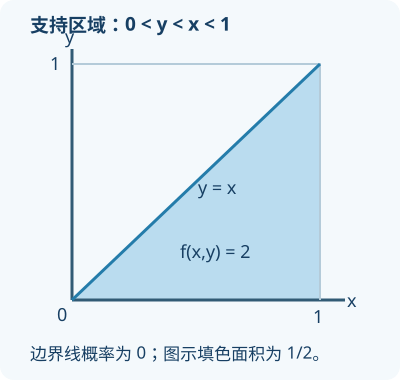

第3章 多维随机变量及其分布
第2章研究一个数，本章同时记录两个数。学习顺序是：先看联合分布的整张图，再把另一个变量合并得到边缘分布；判断能否独立拆开；最后在已知一个变量后重新归一，以及求两变量函数的分布。
核对范围：用户提供的王丽主编《概率论与数理统计》（科学出版社，2026年第1版）纸43—66正文、66—69习题已目视对照。教材例3.1—3.18保留编号，独有新编例归入相应小节；计算为独立推导与复算，未与出版社习题参考答案逐题核对。
3.1 二维随机变量及其分布
3.1.1 联合分布函数与矩形
一次试验中，X和Y分别按固定规则记录一个数，(X,Y)是有顺序的数对。联合分布关心两个数怎样一起出现；同一个试验结果决定两者，不应未经检验就当作独立。
小写x、y是门槛，逗号是“且”。F累计的是以(x,y)为右上角的左下无穷矩形。它对每个坐标不减且右连续，值在[0,1]内；一个门槛趋于−∞时趋于0，两个同时趋于+∞时趋于1。只让y→+∞则留下X的边缘分布，而不一定趋于1。
二维还有关键的矩形增量非负条件。对a<b、c<d：
=F(b,d)−F(a,d)−F(b,c)+F(a,c)≥0。
从大矩形减左边与下边，左下角重复减了两遍，须加回一次。仅检查“分别不减”和两端极限不足以替代矩形条件。端点开闭沿用第2章的左右极限规则；离散时不能随意改。
3.1.2 离散型：每个格子是联合概率
F(x,y)=Σxᵢ≤x，yⱼ≤ypᵢⱼ。
求事件概率就把满足全部条件的格子加起来。表中为0的格子也要保留：它们常用于判断是否独立。
四个具体球标为1、2甲、2乙、3，每次在剩余球中等概率取，不放回取两次。X、Y分别记录第一次、第二次的号码。具体球有4×3=12个等可能有序结果，合并号码后得到：
| X\Y | 1 | 2 | 3 |
|---|---|---|---|
| 1 | 0 | 1/6 | 1/12 |
| 2 | 1/6 | 1/6 | 1/6 |
| 3 | 1/12 | 1/6 | 0 |
例如(1,2)有(1,2甲)、(1,2乙)两种，因此2/12=1/6；(2,2)也有(2甲,2乙)、(2乙,2甲)两种。不能因“不放回”就把重复号码(2,2)删掉。每行和依次1/4、1/2、1/4，总和1。
教材表3.1调查360人：女性未感染250、感染50，男性未感染50、感染10。按教材X=0女、1男，Y=0未感染、1感染，四格除以360得到25/36、5/36、5/36、1/36。两边缘均为(5/6,1/6)。
四格恰等于对应边缘乘积，说明这张样本经验分布中两项独立；不能由这张表直接断言所有人群的性别与感染必然独立。本例仅练习读表，不把教材开头的背景数字当作当前统计结论。
3.1.3 连续型：密度乘小面积再累积
若存在非负可积f(x,y)，满足F(x,y)=∫−∞ˣ∫−∞ʸf(u,v)dv du，称有联合密度。其全平面积分为1。在连续点可对F求混合偏导得到f；但不能仅靠求导覆盖混合分布中的点质量。
D是密度非零的支持区域。小矩形的概率约f(x,y)ΔxΔy，密度数值本身不是点概率；有联合密度时，单点和普通边界线的面积为0。反过来，两个边缘都有密度，不保证存在二维联合密度：例如X均匀而Y=X，概率全部落在一条直线上。
题给f(x,y)=ke−(2x+y)，x>0、y>0，其他处0。归一：(k∫₀∞e−2xdx)(∫₀∞e−ydy)=k/2=1，故k=2。
求P(X+Y<1)时，竖着切三角形：先固定0<x<1，允许0<y<1−x。因此：
=2∫₀¹e−2x(1−e−(1−x))dx
=(1−e⁻²)−2e⁻¹(1−e⁻¹)=(1−e⁻¹)²≈0.399576。
求联合CDF改积左下矩形：x>0、y>0时F(x,y)=(1−e−2x)(1−e−y)；x≤0或y≤0时0。目标三角形与CDF矩形是不同事件，不能拿F(1,1)代替。
有限可测区域D的面积S>0，区域内f=1/S、外部0，则对G⊆D，P((X,Y)∈G)=面积(G)/S。若密度不是常数，须积分，不能只比面积。
例3.4两人各在[0,1]取数。要把联合密度当成单位正方形上的1，本解明确补充两人独立且各自均匀；仅边缘均匀不够。此时X>2Y是0<x<1、0<y<x/2，面积∫₀¹x/2 dx=1/4。若Y=X而两边缘仍均匀，该事件概率为0，说明补充条件确实必要。
同一独立模型下，旧新编例X+Y≤1对应另一个三角形，面积1/2；X≤1/2且Y≤1/2是小正方形，概率1/4。这些数值接近，所画区域却不同。
教材例3.5｜二维正态模型
令u=(x−μ₁)/σ₁、v=(y−μ₂)/σ₂，σ₁、σ₂>0、|ρ|<1，二维正态联合密度为：
/[2πσ₁σ₂√(1−ρ²)]。
μ控制位置，σ控制边缘的尺度，ρ控制共同变化。|ρ|=1时这个密度公式分母为0，不能代入，须另谈退化分布。仅看两个边缘都正态，并不足以断定联合为二维正态。
小节自测｜四格能不能相加？
旧新编表p₀₀=0.1、p₀₁=0.2、p₁₀=0.3、p₁₁=0.4。P(X=1或Y=1)=0.3+0.2+0.4=0.9。直接把P(X=1)=0.7与P(Y=1)=0.6相加会把共同格0.4算两遍；容斥0.7+0.6−0.4仍得0.9。
3.2 二维随机变量的边缘分布
只研究X时，允许Y取所有值；这是“合并”，不是固定Y=0。分布函数统一写作FX(x)=limy→∞F(x,y)，FY(y)=limx→∞F(x,y)。
连续：fX(x)=∫−∞∞f(x,y)dy；
fY(y)=∫−∞∞f(x,y)dx。
求谁的密度，就把另一个变量积掉。先固定保留的变量，沿支持区域切一条线，读出另一个变量的上下限；范围可能随固定值而变。求得边缘后检查非负、支持范围以及各自总概率1。
| X\Y | −1 | 1 | 2 | 行合计 |
|---|---|---|---|---|
| 0 | 1/12 | 0 | 1/4 | 1/3 |
| 1 | 1/6 | 1/12 | 1/12 | 1/3 |
| 3 | 1/4 | 1/12 | 0 | 1/3 |
| 列合计 | 1/2 | 1/6 | 1/3 | 1 |
例如X=1这一行：1/6+1/12+1/12=1/3；Y=−1这一列：1/12+1/6+1/4=1/2。不要把表头中的Y值−1、1、2乘进概率之和；那是后续求期望才做的事。
x>0时fX(x)=2e−2x∫₀∞e−ydy=2e−2x；y>0时fY(y)=2e−y∫₀∞e−2xdx=e−y。各自范围外0，分别是率2和1的指数分布，积分均为1。
固定u，把指数中的式子配方：u²−2ρuv+v²=(v−ρu)²+(1−ρ²)u²。对y积分时dy=σ₂dv，密度就拆成：
×∫−∞∞exp[−(v−ρu)²/(2(1−ρ²))]
/√(2π(1−ρ²)) dv。
后面的积分是均值ρu、方差1−ρ²的正态密度全积分，等于1。因此X∼N(μ₁,σ₁²)，同理Y∼N(μ₂,σ₂²)。ρ改变联合规律而不改变这些边缘：这也说明边缘通常不能反推出联合。
新编贯穿例｜三角形上的常密度

设f(x,y)=2，0<y<x<1，其他处0。三角形面积1/2乘密度2，归一为1。固定0<x<1：fX(x)=∫₀ˣ2dy=2x；固定0<y<1：fY(y)=∫ᵧ¹2dx=2(1−y)。范围外各为0，两边缘各自积分1。
因此P(X<1/2)=∫₀1/22x dx=1/4。后面讨论条件分布与独立性时继续沿用这个例子，先保留这两个边缘密度。
自测｜写范围再算密度
固定x=0.3时，0<y<0.3，fX(0.3)=0.6；固定y=0.2时，0.2<x<1，fY(0.2)=1.6。密度可以超过1；概率仍须对保留变量的区间积分。
3.3 随机变量的相互独立性
独立意味着知道一个变量的信息，不改变另一个的分布（条件定义适用时）。一般定义是对所有实数x、y，F(x,y)=FX(x)FY(y)。
离散表中检查所有行列组合pᵢⱼ=pᵢ·p·ⱼ，包括原来为0的格子；连续情形有联合密度时，检查f(x,y)=fX(x)fY(y)是否几乎处处成立，即允许在不影响面积积分的零测度集合上不同。单个密度点不同不能作为一般反例。
| X\Y | −1 | 0 | 1 | 行合计 |
|---|---|---|---|---|
| 1 | 1/12 | 1/6 | 1/12 | 1/3 |
| 2 | 1/24 | 1/12 | 1/24 | 1/6 |
| 4 | 1/8 | 1/4 | 1/8 | 1/2 |
| 列合计 | 1/4 | 1/2 | 1/4 | 1 |
每一行都是其行合计乘固定列向量(1/4,1/2,1/4)，故九格均满足乘积，X、Y独立。只举第一格相等还不足以证明全部；这里已经给出涵盖整张表的规律。
贯穿三角形例的边缘乘积在整个单位正方形内部都为正，但联合密度在y>x的半个正方形为0；差异有正面积，所以不独立。即使区域内f=2是常数，也不能忽略支持范围。旧四格表则0.4≠0.7×0.6=0.42，立即否定独立。
若ρ=0，联合密度的指数变成−u²/2−v²/2，分母变成2πσ₁σ₂，正好拆成两个边缘密度之积，所以独立。
反向：若独立，连续的联合密度与边缘乘积相等；在中心x=μ₁、y=μ₂处比较，得到1/[2πσ₁σ₂√(1−ρ²)]=1/(2πσ₁σ₂)，所以√(1−ρ²)=1，ρ=0。连续函数若仅几乎处处相等也必处处相等，否则一个点的不等会延伸到邻域，故这里取中心有依据。
结论依赖联合二维正态；不能把“各边缘正态”或一般分布中的“不相关”当成独立。第4章将给具体反例。
自测｜同样的边缘是否只能有一张联合表？
X、Y均以1/2概率取0或1。它们可以独立（四格各1/4），也可以Y=X（对角两格各1/2）。边缘完全相同，联合不同；所以只知道边缘不能决定X+Y的分布。
3.4 二维随机变量的条件分布
3.4.1 离散条件：选中一行或一列后重新归一
P(X=xᵢ|Y=yⱼ)=pᵢⱼ/p·ⱼ，p·ⱼ>0。
“已知”后面的变量决定分母：固定X用行合计，固定Y用列合计。条件后这一行或列的概率总和须为1。旧新编四格表给P(X=1|Y=1)=0.4/0.6=2/3，而P(Y=1|X=1)=0.4/0.7=4/7；两个方向通常不同。
表3.2共24000人，经常熬夜组患4、未患4527，不经常组患1、未患19468。依照教材这张表构造经验比例，患的条件比例分别4/4531≈0.00088281与1/19469≈0.00005136，前者约为后者17.19倍。
分母是“已知属于这一组”的总数，不是24000；也不能把反方向的4/5当作前一个条件比例。这只是教材表内的经验计算，不能仅凭两组比例作因果推断或推到所有人群。
m个红、n个白，l=m+n。X记录第一次、Y记录第二次是否红，红1白0。扫描纸57把Y的文字也写成“第一次”；按题目两次抽取和后续联合计算，这里明确采用Y=第二次的解释。以下等可能抽取，放回时另要求重新混匀、两次独立。
| (X,Y) | 放回联合概率 | 不放回联合概率 |
|---|---|---|
| (0,0) | n²/l² | n(n−1)/[l(l−1)] |
| (0,1) | nm/l² | nm/[l(l−1)] |
| (1,0) | mn/l² | mn/[l(l−1)] |
| (1,1) | m²/l² | m(m−1)/[l(l−1)] |
放回需l≥1，不放回需l≥2。两模型边缘均为P(X=1)=P(Y=1)=m/l、取0的概率n/l，但条件规律不同：
| 条件 | 放回：Y为红 | 不放回：Y为红 |
|---|---|---|
| X=0（需n>0） | m/l | m/(l−1) |
| X=1（需m>0） | m/l | (m−1)/(l−1) |
其余白球条件概率取补数；因两次位置对称，反向给定Y时X的条件表同理。分母对应的条件事件概率为0时，不定义上述普通比值。例如m=0时不能讨论“已知第一次红”。
全概率在表中表现为P(Y=yⱼ)=ΣᵢP(X=xᵢ)P(Y=yⱼ|X=xᵢ)。贝叶斯把方向反过来：P(X=xᵢ|Y=yⱼ)=P(X=xᵢ)P(Y=yⱼ|X=xᵢ)/P(Y=yⱼ)，分母>0。零概率条件项应省略，不写成0乘一个未定义的比值。
3.4.2 连续条件：截面密度除以截面总量
连续Y在一点的概率P(Y=y)=0，不能直接用“联合点概率/条件点概率”。有联合密度且0<fY(y)<∞时，采用常用的密度比版本：
固定y，对x的允许范围积分必须为1，因为分子积分就是分母。直观上，给定Y落在y附近窄带，窄带宽度在分子分母中抵消；在相应连续性条件下取极限得到密度比。一般条件分布在边缘零概率的取值上可能没有唯一版本，本章用题给密度的自然比值，不把它当作0/0运算。
题给f(x,y)=2xy，D由y=x/2、x=2及x轴围成，即0<x<2、0<y<x/2。固定x积y：fX(x)=∫₀x/22xy dy=x³/4，0<x<2；固定y积x：fY(y)=∫2y²2xy dx=4y(1−y²)，0<y<1。各自范围外0，积分各1。
（1）给定Y=1/2，fY(1/2)=3/2，而联合截面f(x,1/2)=x，允许1<x<2。所以fX|Y(x|1/2)=2x/3，1<x<2，其他x处0。积分(1/3)[x²]₁²=1。
（2）对固定0<x<2，fY|X(y|x)=(2xy)/(x³/4)=8y/x²，0<y<x/2，其他y处0。积分[4y²/x²]₀x/2=1。不能把两个条件方向的分母和支持范围混用。
贯穿常密度三角形例中，给定0<y<1，fX|Y(x|y)=2/[2(1−y)]=1/(1−y)，y<x<1。给定Y=1/2时，P(X>3/4|Y=1/2)=2(1−3/4)=1/2；给定Y=0.2时，P(X>0.6|Y=0.2)=1.25×0.4=1/2。在独立单位正方形模型中，条件X仍在(0,1)均匀，分布不随y改变。
连续全概率：fY(y)=∫fX(x)fY|X(y|x)dx；反向条件密度为fX|Y(x|y)=fX(x)fY|X(y|x)/fY(y)，分母须适用。二维正态配方还给：
这是固定y后对x的正态分布；反方向交换下标。ρ=0时回到X的边缘。条件方差在|ρ|<1时为正。
3.5 二维随机变量函数的分布
3.5.1 离散函数：逐格计算，遇到同值要合并
先用联合表，不必先假定独立；若已知独立，才可把每格拆成边缘概率之积。独立公平硬币两次的0—1变量相加取0、1、2，概率1/4、1/2、1/4；中间值来自两格。
| X | Y | 联合概率 | X+Y | X²+Y−2 |
|---|---|---|---|---|
| −1 | −2 | 1/12 | −3 | −3 |
| −1 | −1 | 1/12 | −2 | −2 |
| −1 | 0 | 1/4 | −1 | −1 |
| 1/2 | −2 | 1/6 | −3/2 | −15/4 |
| 1/2 | −1 | 1/12 | −1/2 | −11/4 |
| 3 | −2 | 1/6 | 1 | 5 |
| 3 | 0 | 1/6 | 3 | 7 |
其余两格概率0。对每个新变量，把“新取值—对应概率”按新取值从小到大重排即可；本题每列新取值恰好均不重复。第一问依次−3、−2、−3/2、−1、−1/2、1、3，概率1/12、1/12、1/6、1/4、1/12、1/6、1/6。第二问依次−15/4、−3、−11/4、−2、−1、5、7，概率1/6、1/12、1/12、1/12、1/4、1/6、1/6。两组总和均1。
X₁∼Pois(λ₁)、X₂∼Pois(λ₂)，且相互独立。令Z=X₁+X₂，k为非负整数。拆成i与k−i的互斥情形：
=e−(λ₁+λ₂)/k! × Σi=0…kC(k,i)λ₁iλ₂k−i
=e−(λ₁+λ₂)(λ₁+λ₂)k/k!。
最后一步用二项式定理，故Z∼Pois(λ₁+λ₂)。同理独立B(n₁,p)、B(n₂,p)之和为B(n₁+n₂,p)，两组须有相同p；p不同一般不能合成一个二项分布。
X、Y独立，各以1/2概率取0、1。Z=max(X,Y)，Z=0只有(0,0)，概率1/4；其他三格都为1，P(Z=1)=3/4。同分布并不自动独立，本题已经明确两者独立。
3.5.2 连续函数：先求事件区域，和的密度用卷积
一般Z=g(X,Y)，先确定Z范围，再求FZ(z)=∬{g(x,y)≤z}∩Df(x,y)dxdy。只有确认Z具有密度后，才可用求导给出全部分布；若变换把一片区域压成常数，可能产生点质量。
Z=X+Y，固定x后条件是y≤z−x，因此FZ(z)=∫−∞∞∫−∞z−xf(x,y)dy dx。在适用点对z求导，得：
这一步不要求独立，但要求联合密度。只有独立时才能换成卷积∫fX(x)fY(z−x)dx。几何上枚举总和z的各种分配；不是把两个随机变量的密度直接相加。
独立标准正态时，x²+(z−x)²=2(x−z/2)²+z²/2，故卷积=(e−z²/4/2π)∫−∞∞e−(x−z/2)²dx=e−z²/4/(2√π)，即N(0,2)。此处2是方差、标准差√2。
一般独立正态的线性组合ΣaᵢXᵢ仍正态，均值Σaᵢμᵢ，方差Σaᵢ²σᵢ²；若所有系数为0则是常量，不套非退化密度。未给独立或联合正态条件时，不能仅凭边缘正态便断定和正态。
X、Y独立U(0,1)。卷积被积函数为1的条件同时是0<x<1和0<z−x<1，即max(0,z−1)<x<min(1,z)。
fZ(z)=2−z（1≤z<2）；其余0。
因为积分就是有效x区间的长度。两块三角形面积各1/2，总面积1。对应CDF：z≤0时0，0<z<1时z²/2，1≤z<2时1−(2−z)²/2，z≥2时1。P(Z≤1)=1/2，与单位正方形中目标三角形的面积一致。
教材例3.17｜最大值与最小值先翻译事件
令M=max(X,Y)、L=min(X,Y)。无论是否独立，都有FM(z)=F(z,z)，以及FL(z)=FX(z)+FY(z)−F(z,z)。后式来自“至少一个≤z”的并事件。
若X、Y独立，才化为：
FL(z)=1−[1−FX(z)][1−FY(z)]。
最大值不超过z须“两者都≤z”；最小值大于z须“两者都>z”。这组严格/非严格端点即使离散也成立。独立同分布时分别F(z)²、1−[1−F(z)]²；若再有密度，密度分别2Ff、2(1−F)f。
旧新编U(0,1)例因此给FM(z)=z²、FL(z)=1−(1−z)²（0≤z≤1），范围外按0或1补齐。P(M≤1/2)=1/4、P(L≤1/2)=3/4；P(M≤0.8)=0.64。对应密度2z、2(1−z)，仅在(0,1)非零。
联合密度f(x,y)=(1/2π)e−(x²+y²)/2，Z=X²+Y²≥0。z≤0时FZ(z)=0；z>0时事件是半径√z的圆盘。取x=r cosθ、y=r sinθ，面积元dxdy=r dr dθ：
=∫₀√ze−r²/2r dr=1−e−z/2。
所以fZ(z)=(1/2)e−z/2（z>0），其他处0。这是率1/2的指数分布，也是自由度2的χ²分布。密度全积分1；若漏乘面积元r，将得不到这个结果。此处独立标准正态来自题给联合密度可分解，而不是额外猜测。
章节回顾：每个操作保留了什么信息
| 操作 | 适用方法与检查 |
|---|---|
| 联合→边缘 | 把另一个变量全部求和/积分，不固定成0；边缘各归一 |
| 联合→条件 | 固定已知值，再除对应边缘；分母须正且适用；条件各归一 |
| 边缘→联合 | 一般不唯一；有独立条件才相乘 |
| 判断独立 | 离散查全格含0格；连续查几乎处处并包含支持区域外 |
| Z=g(X,Y) | 离散同值合并；连续先CDF事件区域，再确认可求密度 |
| 和的密度 | 有联合密度可积f(x,z−x)；拆成边缘卷积需独立 |
| 最大/最小 | 先翻译“都≤”或“都>”；乘法版本需独立 |
| 二维正态 | σ₁σ₂>0、|ρ|<1；ρ=0⇔独立只在该联合模型内 |
做题顺序：写变量和模型→列联合表或画支持区域→标目标事件→选求和/积分/条件归一→检查范围与总概率。均值、方差与相关性继续在第4章研究。
整章自检
独立完成：①解释边缘与条件的差别；②画三角形支持区域，分别写竖切横切上下限；③同边缘为何不决定和分布；④卷积何时能拆乘积；⑤最大值不超过z与最小值不超过z分别要求什么？
核对思路
①前者合并另一个变量，后者固定信息后归一；②本章常密度三角形竖切y∈(0,x)，横切x∈(y,1)；③共同变化不同，联合表可不同；④X、Y独立且有相应密度；⑤前者两者都≤z，后者至少一个≤z。独立公平硬币自测：联合P(X=1,Y=0)=1/4，边缘P(X=1)=1/4+1/4=1/2。
来源：用户提供扫描教材纸43—69。以上为独立整理，主要计算已枚举或积分交叉复算；未与出版社习题参考答案逐题核对。原重复专题已归入教材相应小节；无需观看视频。